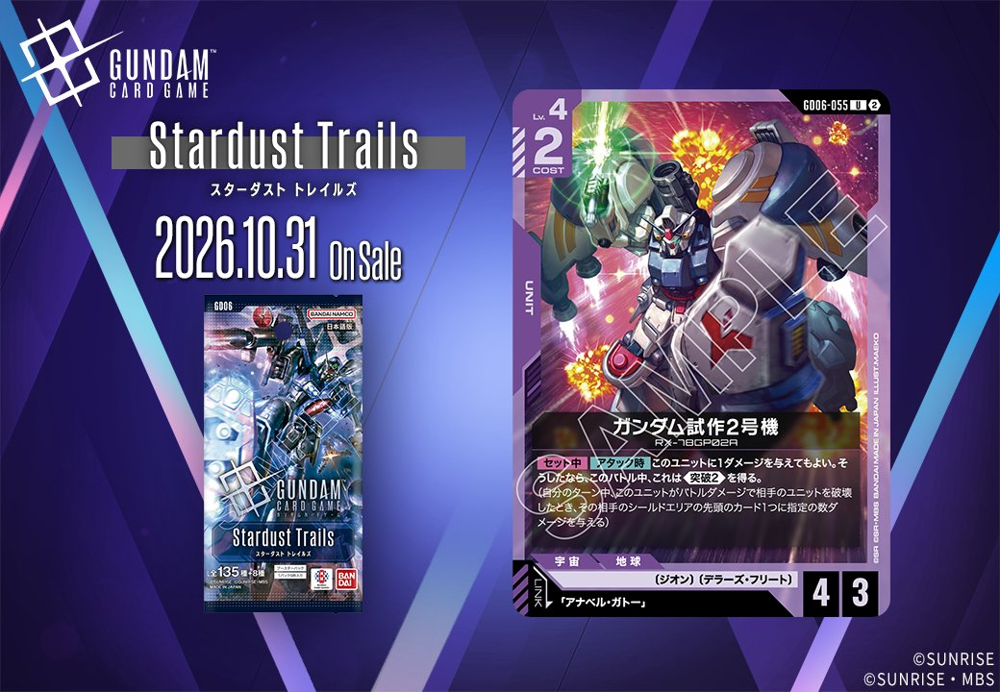

GD06「Stardust Trails」より、紫のCOMMAND「ジオンの残光」(GD06-116)と紫のUNIT「ガンダム試作2号機」(GD06-055)の2枚を紹介します。ガンダム試作2号機は「アナベル・ガトー」とのリンクを持ち、いずれも2026年10月31日に発売されます。
ジオンの残光 (GD06-116)
| 色 | 紫 | タイプ | COMMAND |
| Lv | 5 | コスト | 5 |
| 特徴 | 〔ジオン〕、〔デラーズ・フリート〕 | ||
効果: 【バースト】このカードを手札に加える。【メイン】自分のトラッシュの紫のLv.5以下の〔ジオン〕のユニットカード1枚を選ぶ。それを配備する。
ジオンの残光(GD06-116)は、コスト5の紫コマンドで、【メイン】でトラッシュから紫のLv.5以下の〔ジオン〕ユニット1枚を配備する蘇生効果を持つ。同じGD06のガンダム試作2号機(GD06-049)は【セット時】にトラッシュの〔ジオン〕ユニットが10枚以上でベース破壊を狙えるため、こうしたLv.5以下のユニットをトラッシュから場に戻す用途に使える。 【バースト】でこのカード自身を手札に加えられるため、シールドから受動的に確保できる点も無駄がない。2026-10-31発売。



ガンダム試作2号機 (GD06-055)
| 色 | 紫 | タイプ | UNIT |
| Lv | 4 | コスト | 2 |
| AP | 4 | HP | 3 |
| 特徴 | 〔ジオン〕、〔デラーズ・フリート〕 | ||
| リンク条件 | 「アナベル・ガトー」 | ||
効果: 【セット中】【アタック時】このユニットに1ダメージを与えてもよい。そうしたなら、このバトル中、これは《突破2》を得る。(自分のターン中、このユニットがバトルダメージで相手のユニットを破壊したとき、その相手のシールドエリアの先頭のカード1つに指定の数ダメージを与える)
COST2でAP4/HP3と攻撃寄りのステータスを持つ紫のユニットで、【アタック時】に自ら1ダメージを負う代わりに《突破2》を得られる点が特徴。HP3から1点を払っても残り2で運用でき、バトル勝利時にシールドへ2点を通せるため、盤面とシールド削りを両立しやすい。 リンク先の「アナベル・ガトー」(GD06-093)は【アタック時】にLv.以下の相手ユニットからのバトルダメージを2軽減するため、自傷後のHPを守りつつアタックを継続する運用と噛み合う。2026-10-31発売。
関連カード
-
 アナベル・ガトー(GD06-093)NEW紫系 — 同色・共通特徴: ジオン、デラーズ・フリート（新カード）
アナベル・ガトー(GD06-093)NEW紫系 — 同色・共通特徴: ジオン、デラーズ・フリート（新カード） -
 ガンダム試作2号機(GD06-049)NEW紫系 — 同色・共通特徴: ジオン、デラーズ・フリート（新カード）
ガンダム試作2号機(GD06-049)NEW紫系 — 同色・共通特徴: ジオン、デラーズ・フリート（新カード） -
 ニャアン(GD06-094)NEW紫系 — 同色・共通特徴: ジオン（新カード）
ニャアン(GD06-094)NEW紫系 — 同色・共通特徴: ジオン（新カード） -
 GFreD(GD06-051)NEW紫系 — 同色・共通特徴: ジオン（新カード）
GFreD(GD06-051)NEW紫系 — 同色・共通特徴: ジオン（新カード） -
 リック・ドムⅡ(カリウス機)(GD06-057)NEW紫系 — 同色・共通特徴: ジオン、デラーズ・フリート（新カード）
リック・ドムⅡ(カリウス機)(GD06-057)NEW紫系 — 同色・共通特徴: ジオン、デラーズ・フリート（新カード）